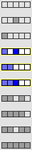
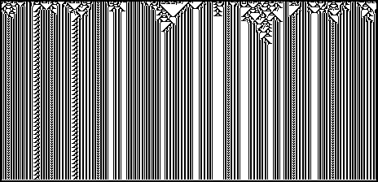

4. Cellular Automata and Fractal Evolution
Classifying Cellular Automaton Behavior
Class II:
Periodic
Perhaps after some initial transients, the pattern repeats itself exactly, in space (horizontally), in time (vertically), or both.


Return to
Classifying cellular automata
.